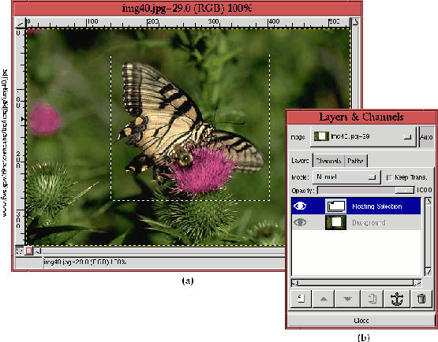
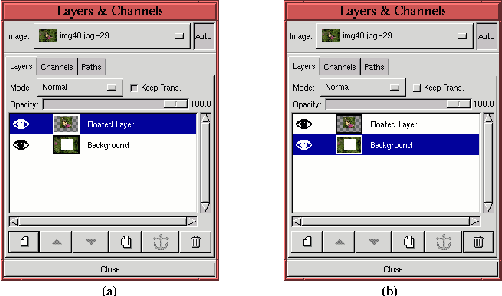
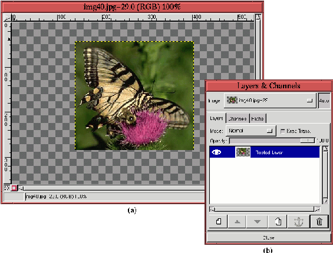

Next: 7.6.3
Зеркальное отображение Up: 7.6.2
Изменение размера и Previous: 7.6.2.3
Масштабирование слоев
Next: 7.6.3
Зеркальное отображение Up: 7.6.2
Изменение размера и Previous: 7.6.2.3
Масштабирование слоев
7.6.2.4 Изменение размера слоя
Кроме масштабирования, можно так же изменить размер слоя. Это делается при
помощи функции Слой Boundary Size (изменить размер границ слоя - Layer
Boundary Size), которая находится в меню слоев. Обычно размер слоя приходится
уменьшать, чтобы скрыть ненужные детали изображения. В этом случае возникают те
же проблемы, что и с изменением размера всего изображения - слой очень трудно
разместить в его новых границах. Когда нам надо уменьшить размер
изображения, то проблема решается при помощи инструмента
Кадрировать, но этот инструмент не работате с отдельными слоями. Тем не
менее есть способ, который работатет примерно так же, как Кадрировать.
Рисунки 7.19
и 7.20
наглядно иллюстрируют этот процесс.
Figure: Уменьшение размеров слоя:
плавающая прямоугольная выделенная область
 |
Figure: Уменьшение размеров слоя:
прикрепление выделенной области к новому слою
 |
Этот метод состоит из четырех этапов:
-
- Область, которую надо вынести в отдельный слой, выделяется инструментом
Выделение прямоугольной области (более подробно об этом инструменте
говорится в главе 8). На
рисунке 7.19
(a) показано, как делается выделенная прямоугольная область.
-
- Затем выделенную оласть надо сделать плавающей, при помощи функции
Плавающее, которая находится в меню окна изображения
Выделение->Плавающее или вызывается клавишами быстрого доступа
Ctrl-Shift-l. На рисунке 7.19
(b) показан диалог ``Слои'' после применения функцииПлавающее.
-
- Плавающую выделенную область помещаем в новый слой, используя функцию
Новый слой, которая находится в меню слоев или вызывается кнопкой
Новый слой в окне диалога слоев. На рисунке 7.20
(a) показан диалог ``Слои'' в момент создания нового слоя.
-
- Затем старый слой делаем активным, как это показано на рисунке 7.20
(b) и удаляем его, нажав на кнопку Удалить слой в окне диалога
``Слои''.
Полученный результат изображен на рисунке 7.21.
Figure: Размер слоя изменен
 |
На рисунке 7.21
(a) видны границы уменьшенного слоя - черно-желтая пунктирная линия. На
рисунке 7.21
(b) показано, как в результате всех вышеописанных действий должен выглядеть
диалог ``Слои''.
Не смотря на то, что довольно часто может возникать необходимость в
увеличении изображения, трудно придумать причину для увеличения
слоя. Такая неоходимость может возникнуть разве что из соображений
симметрии.
Next: 7.6.3
Зеркальное отображение Up: 7.6.2
Изменение размера и Previous: 7.6.2.3
Масштабирование слоев
Grigory Bakunov 2003-05-26